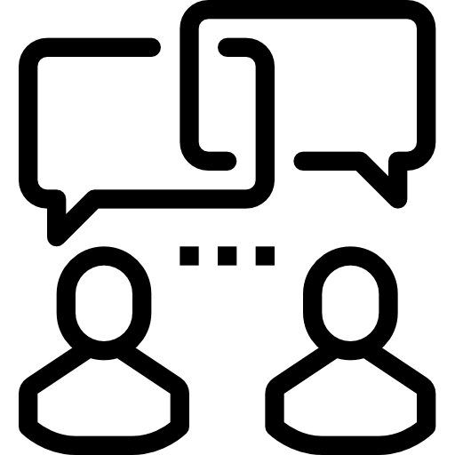

Soft skills

comunicacion
asertiva
Creo en el respecto, la colaboración, la mejora continua, el orgullo de
pertenencia, el foco en generar valor para el cliente y en que es
necesario adaptarse para reaccionar a los cambios. Para mi, ser ágil es
hacer cuando no sé todo lo que necesito saber para hacer. Es enfocarme en
la iteración como forma de avanzar en entornos inciertos, favoreciendo el
aprendizaje y la comunicación en los espacios de colaboración, aportando
soluciones y creciendo con cada desafío.
La escucha activa es una forma de oír en la que el oyente se mantiene
comprometido con su interlocutor de una forma dinámica. Se refiere a la
habilidad de escuchar no sólo lo que la persona está expresando
directamente, sino también los sentimientos, ideas o pensamientos que
subyacen a lo que se está intentando expresar. En mi caso he pasodo los
ultimos 4 años desarrollando esta habilidad a través de mi rol como coach
en sesiones uno a uno.
Este concepto hace referencia a la habilidad directiva consistente en el
adecuado reparto de este recurso para desarrollar tareas y proyectos,
estableciendo priridades en orde de urgencia e importancia y estableciendo
objetivos efectivos y eficientes. mis últimos 3 años como emprendedor me
permitieron adquirir y desarrollar estas habilidades en pos de las
necesidades que un emprendimineto propio requiere.
La comunicación asertiva es la habilidad de exponer opiniones, comentarios
y conceptos de forma clara, consisa y respetuosa, favoraciendo la
colaboración, el entendimiento y la empatia en el dialogo. Actualmente me
desempeño como formador en una escuala de coaching ontológico, rol que
desempeño desde hace más de 2 años y que me a permitido desarrollar y
refinar mis habilidades comunicacionales a la hora de comunicarme con un
otro.